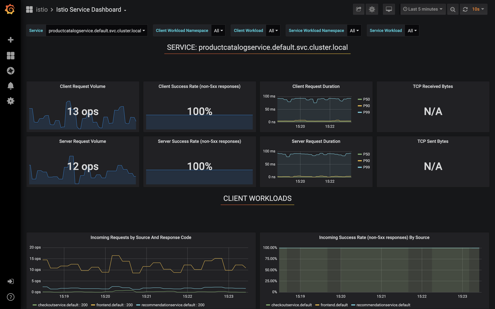

Inspect service metrics in Grafana
This chapter presents how to monitor service mesh traffic using the Grafana Istio addon.
Outline
In this chapter you will learn:
- How to analyze service mesh traffic in the global dimension.
- How to analyze traffic for a particular application service.
- How to monitor the operation of individual components in Istio control plane.
Walkthrough
TODO: Describe how metrics are collected
Access the dashboard
Port-forward the Grafana dashboard to your local machine:
$ istioctl dashboard grafana
Your browser should startup automatically and display the dashboard. Otherwise, visit the address: http://localhost:3000.
Analyze mesh dashboard
Navigate to the Mesh Dashboard. It should look similar to:

The dashboard provides the global view of the service mesh:
- total number of discovered services,
- global request volume expressed in operations per second (ops),
- global success rate - percentage of requests completed with success,
- total failed requests - number of requests ended with 4xx and 5xx HTTP error codes.
In addition, the dashboard provides essential metrics for the discovered services:
- operations per second,
- p50, p90, p99 latency,
- success rate.
Analyze service dashboard
Navigate to the Service Dashboard
and pick the productcatalog service from the Service dropdown.
The dashboard should look similar to:


The dashboard provides detailed metrics for the selected service:
- client/server request volume,
- client/server success rate,
- client/server request duration,
- incoming requests by source,
- incoming success rate by source,
- incoming request duration by source,
- incoming request size by source,
- TCP received/sent bytes (only for raw TCP traffic).
Note that you can use the Service dropdown to switch between inspected services. Moreover, you can view the metrics in the context of a particular service client by using the Client workload dropdown.
Analyze Pilot dashboard
Navigate to the Pilot Dashboard.
It provides metrics related to Istio Pilot component deployed in the Istio control plane.
The first part of the dashboard describes the usage of system resources (CPU, memory, disk):

The second part presents metrics specific to Pilot operation, for instance:
- Pilot pushes - frequency of configuration distribution to sidecar proxies,
- Pilot errors - number of errors encountered during configuration rendering and distrubution,
- Proxy push time - time needed to synchronize configuration to a proxy.

Note, each component in the control plane provides a similar monitoring dashboard:

Inspect them to identify what metrics are avilable for Galley, Citadel and Mixer.
Exercises
Use the presented Grafana dashboards to answer the following questions:
- How many ops are being currently processed by the application?
- What is the global success rate?
- Are there any request errors occurring in the application at the moment? How do you check that?
- Which application service processes the most requests? What is its p99 latency and success rate?
- What is the current CPU and memory usage by Istio Pilot?
- Does Istio Pilot encouteres errors at the moment?